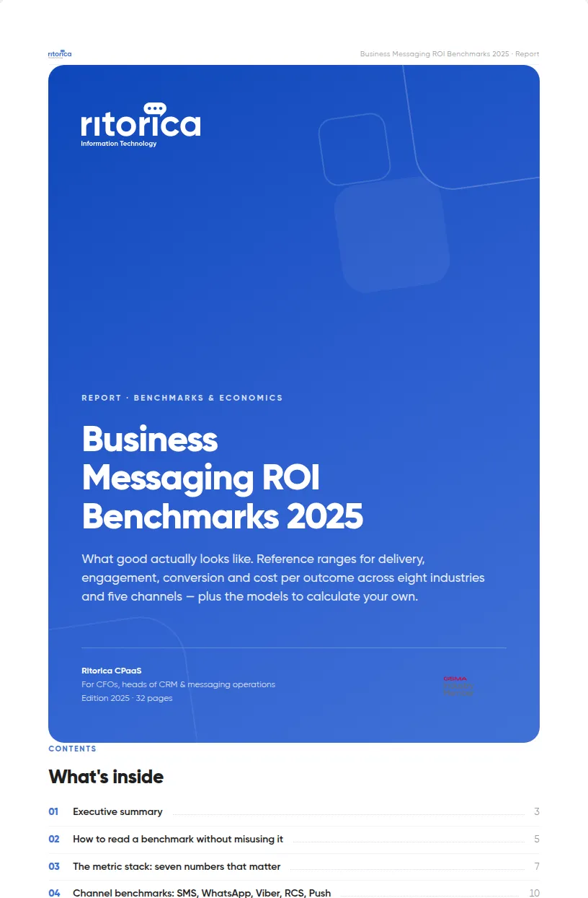
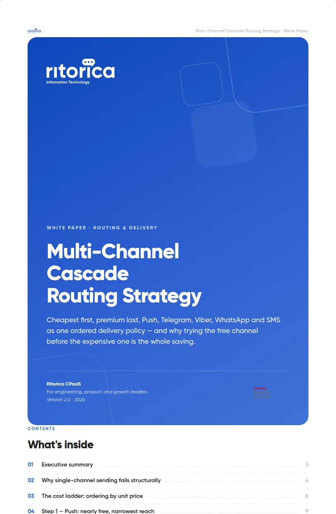
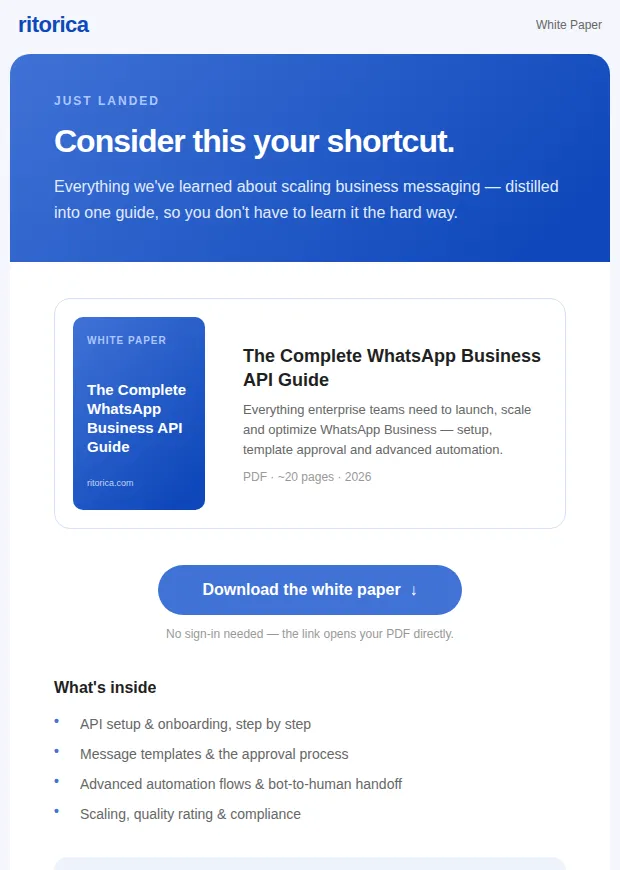

What this proves: I can turn deep technical knowledge into content a buyer chooses to download, and ship the whole path myself: the research, the writing, the layout, the page that collects the lead and the email that follows.
4guides published on the company website
87pages across the four, from 13 to 30 each
8 × 5industries and channels covered by the ROI benchmarks
12plays in the deliverability playbook, with a 60-second scorecard
The guides
- Business Messaging ROI Benchmarks 2025 (26 pages). Reference ranges for delivery, engagement, conversion and cost per outcome across eight industries and five channels: SMS, WhatsApp, Viber, RCS and push. Plus the models to calculate your own.
- The Deliverability Playbook (18 pages). Twelve plays for getting more messages delivered, from number validation to compliance, with a scorecard that finds the weakest link first.
- The Complete WhatsApp Business API Guide (13 pages). Setup, template approval, conversation pricing and automation flows, for teams launching WhatsApp at enterprise scale.
- Multi-Channel Cascade Routing Strategy (30 pages). Cheapest first, premium last: push, Telegram, Viber, WhatsApp and SMS as one ordered delivery policy, and why trying the free channel before the expensive one is where the saving comes from.


How each guide is put together
- One reader, one decision. Each guide names who it is for on the cover and opens with an executive summary they can act on alone.
- Numbers lead. The design system's rule for copy: promise, then mechanism, then proof. Every chapter makes its case with a figure, a model or a checklist.
- Laid out in code. The pages are HTML and CSS on the Ritorica design system, printed to PDF, so a correction is a text edit, not a redraw.
- A cover per paper. One object that stands for the idea, built from type and interface parts rather than stock art.
From download to follow-up
A guide is only useful to the company if the right person downloads it. So each one has its own card on the website I built, a short form in front of the file, and an email that delivers it with a summary of what is inside. Each guide also feeds a LinkedIn post series and an email campaign.

What is not on this page
Download and lead numbers belong to the company, so they stay private. So do the papers I have written that are not published yet.